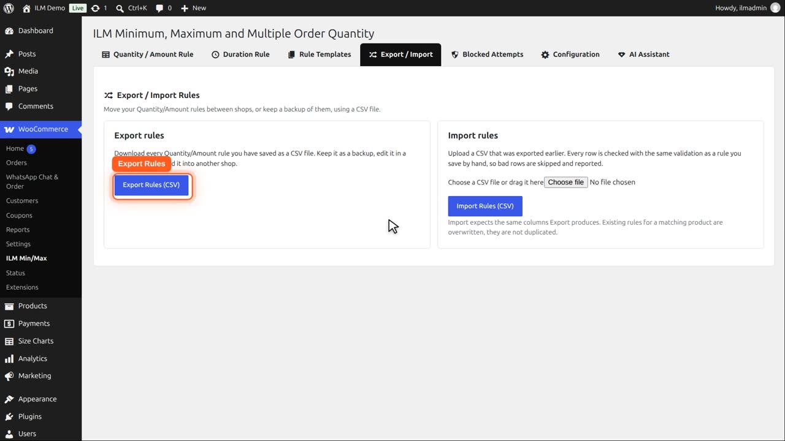
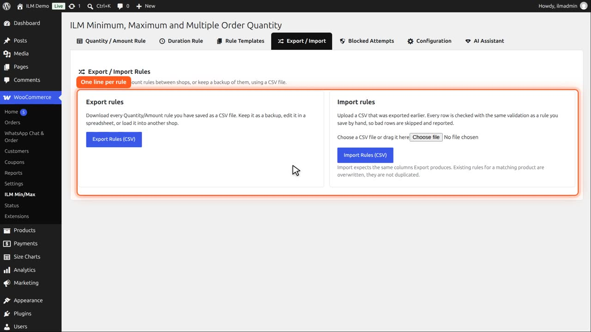
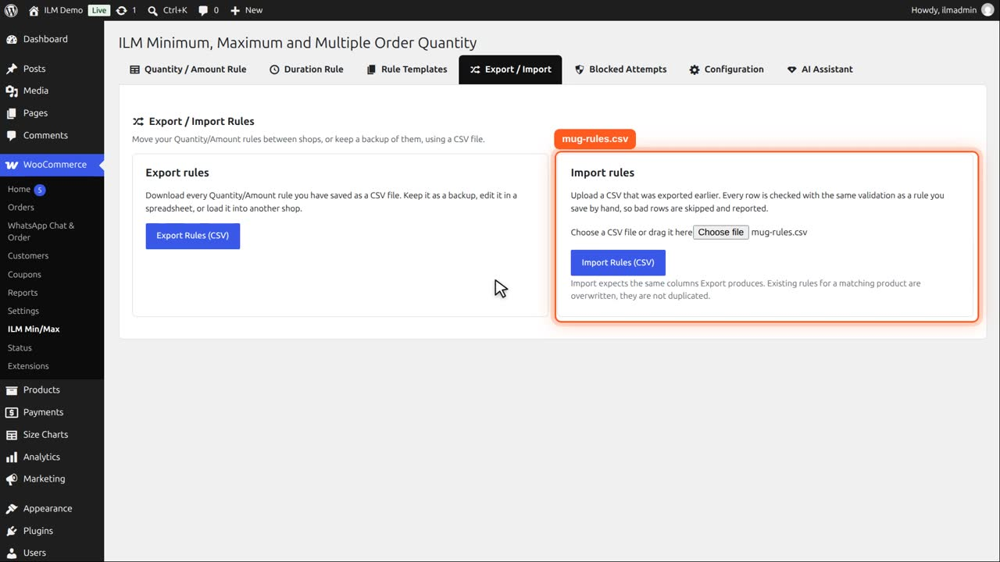
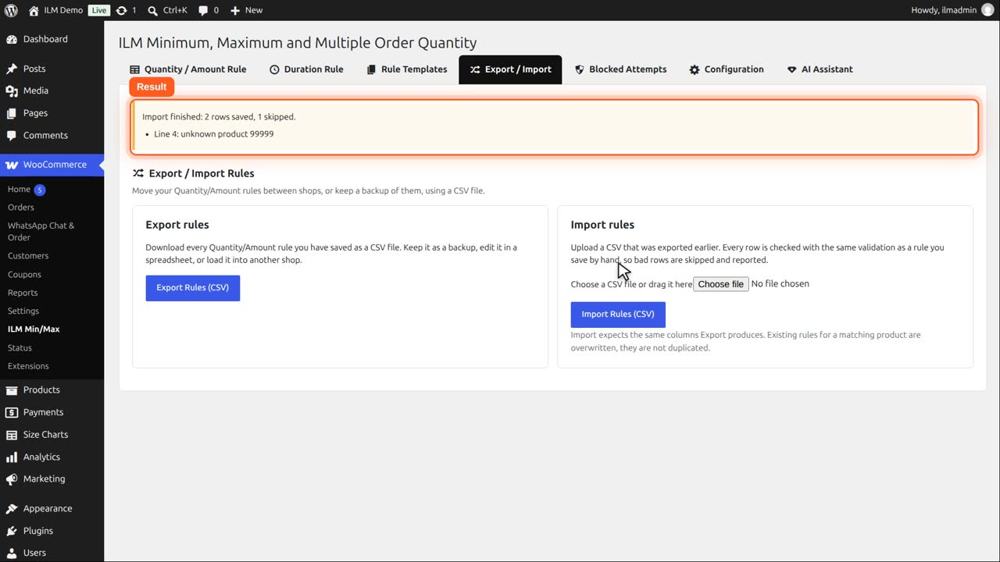
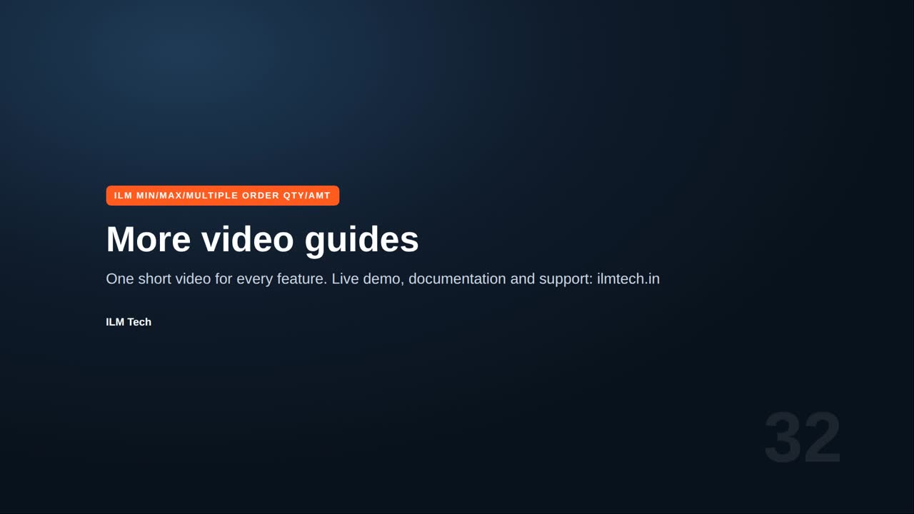

Pro add-on. This feature needs the Pro add-on. See Free and Pro.
Move rules between shops, or keep a backup, using a CSV file. You can edit the file in any spreadsheet.
| Column | Content |
|---|---|
level | The rule level: product, category, brand, tag or role. Required. |
object_id | The product id, or the category, brand or tag id on those levels. Required. |
variation_id | The variation id, for a rule on one variation. |
role, customer_id | The user role or the customer the rule is for. |
min_qty, max_qty, step | Min Qty, Max Qty, Multiple Qty. Required. |
limit_mult, min_amt, max_amt | Limit Mult Qty, Min Amt, Max Amt. |
allowed | Allowed quantities, e.g. 6,12,24. |
conditions | The conditions, as exported. |
duration_id | The Duration Rule id. |
status | 1 on, 0 off. |
ref | Written by the export to help you read the file: the SKU or product name, the term slug, or the role. |
Open the Export and Import tab. Export Rules downloads every rule you have saved as a CSV file.

Each line is one rule: the level, the product or term, the limits, the duration rule, the role, the customer and the status. You can edit it in any spreadsheet.

To import, choose a CSV file in the same layout, or drag it onto the box. This one sets a minimum of two and a maximum of ten on two mugs, plus one line with a product that does not exist.

Click Import Rules. Every line is checked like a rule typed by hand. Good lines are saved, bad ones are skipped and reported.

The mugs now have their new rules. A rule that already exists for a product is updated, never duplicated.
